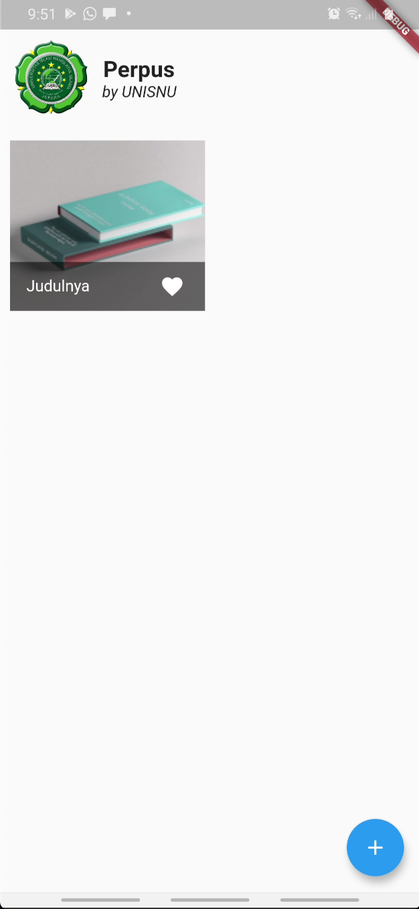
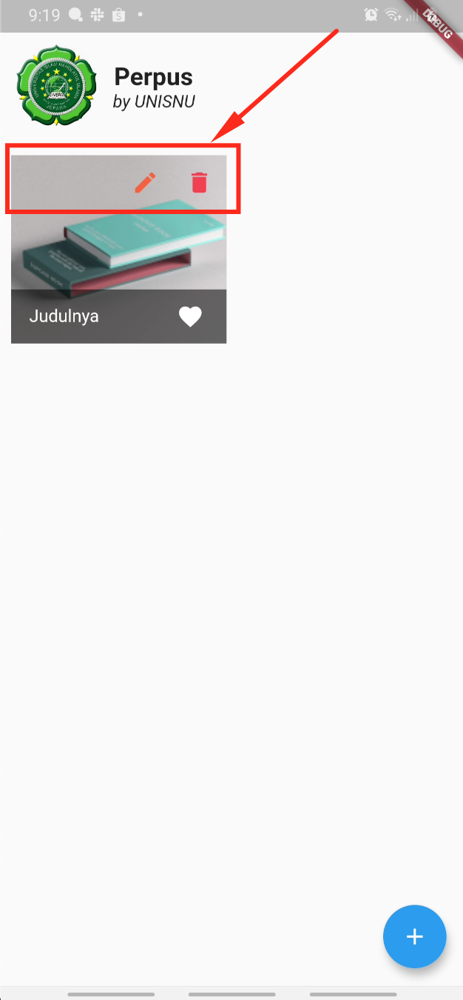

Grid setup
Langkah awal, kita akan mulai dengan mensetup pada bagian "Grid". Ini adalah bagian utama yang akan menampilkan daftar buku yang diinput
Pertama, download source code dari: https://github.com/BIQDev/unisnu-flutter-2020.11/tree/crud-0
GridView.builder()
Flutter memiliki sebuah class yang bernama GridView. Class tersebut bertujuan untuk mengatur layout dalam tampilan "grid".
Terdapat berbagai macam metode yang bisa digunakan untuk menginstanisasi class tersebut. Namun untuk tujuan dinamis seperti pada project CRUD ini, dimana jumlah "child" dari grid yang ditampilkan akan berubah-ubah, maka akan lebih tepat untuk menggunakan constructor GridView.builder(). Constuctor lain seperti GridView.count(), lebih tepat digunakan untuk menampilkan grid "child" yang jumlahnya tetap dan telah ditentukan. Seperti bisa dibaca pada dokumentasi resmi flutter: https://api.flutter.dev/flutter/widgets/GridView-class.html
Grid item / "grid child"
Daftar buku pada "Grid view", tiap buku akan ditampilkan dengan sebuah widget yang bernama Gridtile. Widget tersebut adalah bawaan dari flutter, yang memang dikhususkan untuk menjadi "child" dari sebuah "Grid view". Meskipun sebenarnya kita buat widget sendiri ( custom widget ).
Setup asset
Langkah awal, kita buat "mockup" dari widget yang akan menampilkan buku. Sebelumya kita setup dulu "asset" yang kita perlukan untuk "preview". Yaitu gambar buku sebagai bagian icon.
Untuk itu, kita sudah memiliki sebuah file gambar pada assets/mock/book.png. Kita tinggal import pada file : pubspec.yaml setelah baris 51, sehingga menjadi seperti ini:
50 51 52 | |
"mock" tampilan buku
Setelah asset di deklarasikan pada file pubspec.yaml diatas, gambar tersebut akan kita tampilkan pada "mock" dari GridTile.
Buka file lib/widgets/home/book-list.dart. Pada baris ke-14 dengan code:
14 | |
Kita hapus dan ubah dengan widget GridTile sebagai berikut:
14 15 16 17 18 19 20 21 22 23 24 25 26 27 28 29 30 | |
Simpan, dan seharusnya, setelah selesai "hot reload" kita mendapatkan tampilan seperti berikut ini:

Buat "custom widget" grid item
Setelah cukup puas dengan "mockup" pada tampilan Grid Item kita, pindahkan GridTile() ke widget terpisah. Hal ini memudahkan kita untuk mengembangkan Grid Item tersebut lebih detail secara terpisah dan substansial.
- Buat file
lib/widgets/home/book-list-item.dart -
Pindahkan
GridTile()darilib/widgets/home/book-list.dartline 14, pindahkan ke file baru diatas. Sehingga, filelib/widgets/home/book-list-item.dartakan menjadi seperti dibawah ini:1 2 3 4 5 6 7 8 9 10 11 12 13 14 15 16 17 18 19 20 21 22 23 24
import 'package:flutter/material.dart'; class BookListItem extends StatelessWidget { @override Widget build(BuildContext context) { return GridTile( child: Image.asset( "assets/mock/book.png", width: 80, height: 80, fit: BoxFit.cover, ), footer: GridTileBar( backgroundColor: Colors.black54, title: Text("Judulnya"), trailing: IconButton( splashColor: Colors.red[400], icon: Icon(Icons.favorite), onPressed: () {}, ), ), ); } } -
Pada file
lib/widgets/home/book-list.dartline 3, Tambahkan:
Kemudian line 16 menjadi1 2 3 4 5 6
import 'package:flutter/material.dart'; import 'package:perpus/widgets/home/book-list-item.dart'; class BookList extends StatefulWidget { ...16
itemBuilder: (ctx, i) => BookListItem(),
Grid item detail
Pada bagian ini kita akan memberikan sedikit detail pada "grid item" kita. Terutama untuk tujuan navigasi yang berkaitan dengan CRUD, yaitu pada bagian update dan delete
Beralih kembali ke file lib/widgets/home/book-list-item.dart buat baris baru setelah baris ke-12. Pada baris ke-13, masukkan kode berikut:
13 14 15 16 17 18 19 20 21 22 23 24 25 26 27 28 | |
Akan muncul 2 tombol pada bagian header dari "grid item" seperti pada screenshot berikut:

Saat ini tombolnya masih belum memiliki fungsi apa pun, segera kita akan mem-bind fungsi update dan delete ke tombol tersebut.